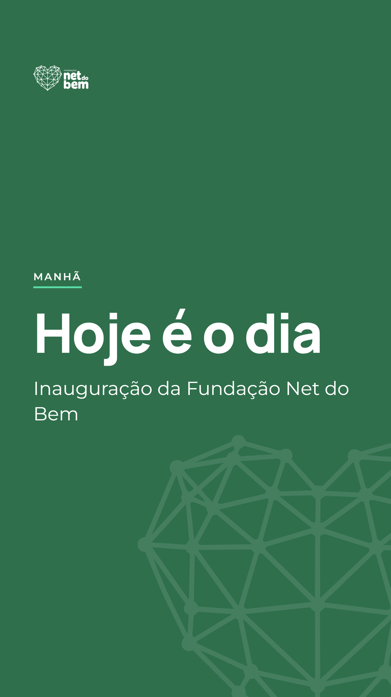
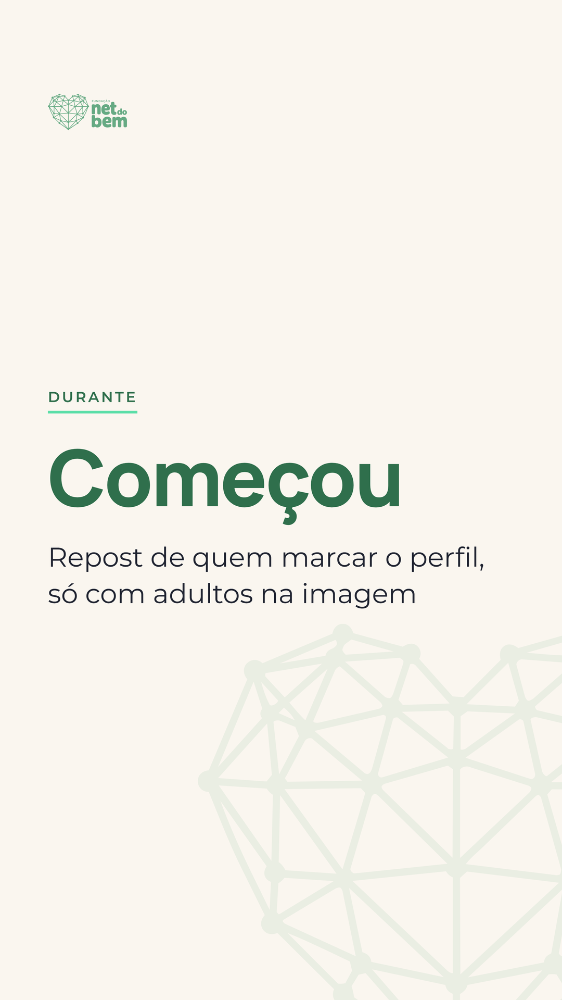
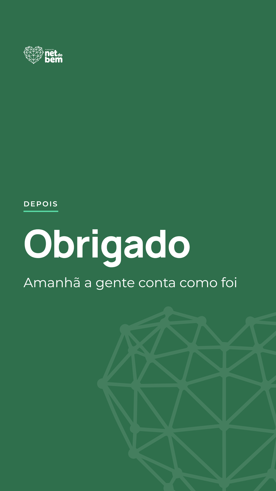

V.1, revisada em 25/11. A trilha do pré-briefing em 18 posts: inauguração (25 a 30/11), pesquisa de mapeamento e Dia de Doar (dezembro), Natal e continuidade para 2027. Carrosséis com no máximo 3 cards e nada que repita o que o perfil já publicou.
18 posts9 prontos9 com pendênciaInstagram + Facebook
Calendário sugerido
Inauguração: um post por dia de 25 a 30/11. Dezembro: 2 a 3 posts por semana, com as datas especiais (Dia de Doar, Voluntário, Direitos Humanos, FIA, Natal e Ano Novo).
Aprovação do calendário
Quem aprova: Barros (gestor), Patrícia Galheigo e Agda Ximenes (validadoras). Cada post vai ao ar com o ok dos três.
Arraste as imagens, copie a legenda de cada rede e aprove ou peça ajuste. Post com pendência só vai ao ar depois que ela for resolvida.
Post 01 · Quarta-feira, 25/11 · 18h
Amanhã: conhecer para fortalecer
Etapa 1 · InauguraçãoPronto Post único · 1 imagem
1/1
Observação
Publicar hoje, se o post de expectativa ainda não saiu no perfil.
PautaExpectativa · Conhecer para fortalecer
CTA únicoChama no WhatsApp
PúblicoComunidade e potenciais apoiadores
ObjetivoAvisar que a inauguração é amanhã, deixar claro que o evento é fechado e abrir contato para quem quer conhecer.
Amanhã, conhecer para fortalecer.
Nesta quinta-feira, 26/11, a Fundação Net do Bem completa um ano e faz sua inauguração em Sorocaba, num encontro fechado com convidados. A proposta é ouvir as casas de acolhimento e começar a construir uma rede de apoio junto com elas.
Quer conhecer a fundação? Chama no WhatsApp: (15) 99100-3425.
#FundacaoNetDoBem #Sorocaba #Acolhimento #QuemCuidaDeQuemCuida
Amanhã, conhecer para fortalecer.
Nesta quinta-feira, 26/11, a Fundação Net do Bem completa um ano e faz sua inauguração em Sorocaba, num encontro fechado com convidados. A proposta é ouvir as casas de acolhimento e começar a construir uma rede de apoio junto com elas.
Quer conhecer a fundação? Chame no WhatsApp: (15) 99100-3425.
Aprovação: Barros (gestor) · Patrícia e Agda (validadoras)
Texto alternativo e checklist de segurança
Ilustração em massinha de três adultos preparando um evento: uma estende um tapete verde com um coração, outro carrega uma planta, outro arruma cadeiras. Texto: amanhã, conhecer para fortalecer. 26 de novembro de 2026, Sorocaba.
1 ideia · 1 CTA · gancho até 6 palavras · sem criança identificável · sem endereço ou rotina · sem cópia de perfil de referência · sem Imposto de Renda · rosto de adulto só com autorização · aprovado por Barros, Patrícia e Agda.
Post 02 · Quinta-feira, 26/11 · 17h, antes do evento
Hoje é dia de inaugurar
Etapa 1 · InauguraçãoPronto Post único + stories em tempo real · 1 imagem



1/4
Observação
Publicar em collab com o perfil pessoal do André.
Deixar o QR code do perfil visível no evento e pedir para seguir na fala de abertura.
Stories em tempo real da abertura, só com adultos; priorizar o depoimento da Dra. Cristina.
PautaInauguração
CTA únicoSiga e compartilhe
PúblicoConvidados e comunidade
ObjetivoMarcar a inauguração e trazer os convidados para o perfil.
Stories do dia (últimas imagens do carrossel)
Manhã: Hoje é o dia. Inauguração da Fundação Net do Bem
Durante: Começou. Repost de quem marcar o perfil, só com adultos na imagem
Depois: Obrigado. Amanhã a gente conta como foi
Hoje é dia de inaugurar.
Um ano depois de nascer, a Fundação Net do Bem é inaugurada hoje, em Sorocaba, num encontro com convidados. Nosso trabalho é apoiar as casas de acolhimento e as pessoas que cuidam nelas. A partir de agora, você acompanha esse trabalho por aqui.
Siga e compartilhe.
#FundacaoNetDoBem #Sorocaba #Acolhimento #QuemCuidaDeQuemCuida
Hoje é dia de inaugurar.
Um ano depois de nascer, a Fundação Net do Bem é inaugurada hoje, em Sorocaba, num encontro com convidados. Nosso trabalho é apoiar as casas de acolhimento de crianças e adolescentes e as pessoas que cuidam nelas.
Siga a página e compartilhe.
Aprovação: Barros (gestor) · Patrícia e Agda (validadoras)
Texto alternativo e checklist de segurança
Ilustração em massinha de quatro adultos cortando uma fita verde diante de um grande coração feito de hastes e pontos. Texto: um ano depois, hoje é dia de inaugurar.
1 ideia · 1 CTA · gancho até 6 palavras · sem criança identificável · sem endereço ou rotina · sem cópia de perfil de referência · sem Imposto de Renda · rosto de adulto só com autorização · aprovado por Barros, Patrícia e Agda.
Revisão técnica da Agda (assistente social) sobre o papel do poder público.
PautaTriangulação no coração
CTA únicoSalva e compartilha
PúblicoSociedade, empresas e convidados da inauguração
ObjetivoExplicar em um olhar o que é a casa de acolhimento, o papel do poder público, dos apoiadores e da fundação.
Uma rede, quatro papéis.
O acolhimento de crianças e adolescentes depende de quatro pontas trabalhando juntas. A casa acolhe e cuida. O poder público decide, financia e acompanha. Apoiadores e empresas trazem recursos e conhecimento. A Net do Bem conecta essas pontas e fortalece as casas.
Salva e compartilha.
#FundacaoNetDoBem #Sorocaba #Acolhimento #QuemCuidaDeQuemCuida
Uma rede, quatro papéis.
O acolhimento de crianças e adolescentes depende de quatro pontas trabalhando juntas. A casa de acolhimento acolhe e cuida. O poder público (Justiça, Conselho Tutelar e assistência social) decide, financia e acompanha. Apoiadores e empresas trazem recursos e conhecimento. A Fundação Net do Bem conecta essas pontas e fortalece as casas com gestão, formação e pesquisa.
Salve e compartilhe.
Aprovação: Barros (gestor) · Patrícia e Agda (validadoras)
Texto alternativo e checklist de segurança
Infográfico com o coração de linhas e pontos da Net do Bem. Nos vértices: casa de acolhimento, poder público e apoiadores e empresas; no centro, a Net do Bem conectando as três pontas. Segundo card explica o papel de cada um.
1 ideia · 1 CTA · gancho até 6 palavras · sem criança identificável · sem endereço ou rotina · sem cópia de perfil de referência · sem Imposto de Renda · rosto de adulto só com autorização · aprovado por Barros, Patrícia e Agda.
Fotos oficiais da fotógrafa: 3 melhores momentos, só adultos, sem placa ou fachada.
Uma frase real sobre o que foi ouvido no evento, definida pela equipe.
Se houver depoimento da Dra. Cristina em vídeo, publicar como Reels com autorização dela.
Confirmar se representantes de casas de acolhimento estiveram presentes antes de citar.
PautaPós-evento
CTA únicoSiga e compartilhe
PúblicoConvidados, casas e parceiros
ObjetivoRegistrar o evento com fotos reais e a mensagem de escuta e construção conjunta.
O que ouvimos na inauguração.
Na quinta-feira, recebemos convidados, parceiros e representantes de casas de acolhimento em Sorocaba. [Uma frase sobre o que foi ouvido, definida pela equipe.] Foi o primeiro passo de um trabalho que vamos construir junto com as instituições.
Siga e compartilhe.
#FundacaoNetDoBem #Sorocaba #Acolhimento #QuemCuidaDeQuemCuida
O que ouvimos na inauguração.
Na quinta-feira, a Fundação Net do Bem recebeu convidados, parceiros e representantes de casas de acolhimento em Sorocaba. [Uma frase sobre o que foi ouvido, definida pela equipe.] Foi o primeiro passo de um trabalho que vamos construir junto com as instituições.
Siga a página e compartilhe.
Aprovação: Barros (gestor) · Patrícia e Agda (validadoras)
Texto alternativo e checklist de segurança
Carrossel com três fotos oficiais da inauguração e faixa verde: abertura do evento, convidados adultos conversando e a equipe da fundação. Não aparecem crianças.
1 ideia · 1 CTA · gancho até 6 palavras · sem criança identificável · sem endereço ou rotina · sem cópia de perfil de referência · sem Imposto de Renda · rosto de adulto só com autorização · aprovado por Barros, Patrícia e Agda.
Trocar o retrato em massinha por uma foto real do André, como no post da Patrícia.
O André revisa as notas "Sobre mim" e "O que faço".
PautaEquipe · André (padrão do post da Patrícia)
CTA únicoSiga e compartilhe
PúblicoTodos os públicos
ObjetivoHumanizar: mostrar quem é o fundador e o que ele faz na prática.
Um pouco mais sobre o André.
Fundador da Net do Bem, o André passou mais de 30 anos construindo empresa na área de tecnologia e decidiu colocar essa experiência de gestão a serviço da infância. Na fundação, ele aproxima empresas, profissionais e poder público das casas de acolhimento.
Siga e compartilhe.
#FundacaoNetDoBem #Sorocaba #Acolhimento #QuemCuidaDeQuemCuida
Um pouco mais sobre o André Facciolli, fundador da Fundação Net do Bem.
Ele passou mais de 30 anos construindo empresa na área de tecnologia e decidiu colocar essa experiência de gestão a serviço da infância. Na fundação, aproxima empresas, profissionais e poder público das casas de acolhimento.
Siga a página e compartilhe.
Aprovação: Barros (gestor) · Patrícia e Agda (validadoras)
Texto alternativo e checklist de segurança
Card com retrato do André Facciolli, fundador, e notas escritas à mão: sobre mim, 30 anos de tecnologia e gestão; o que faço, aproximo empresas e poder público das casas.
1 ideia · 1 CTA · gancho até 6 palavras · sem criança identificável · sem endereço ou rotina · sem cópia de perfil de referência · sem Imposto de Renda · rosto de adulto só com autorização · aprovado por Barros, Patrícia e Agda.
Definir o valor de referência ("quanto ajuda"), por exemplo o que R$ 50 ou R$ 100 viabilizam.
Confirmar o canal de doação: formulário do site, WhatsApp ou PIX.
PautaDia de Doar
CTA únicoChama no WhatsApp
PúblicoPessoas físicas e empresas
ObjetivoPrimeiro pedido de doação, concreto, com as cinco informações do briefing.
Hoje é Dia de Doar.
No Dia de Doar, organizações do Brasil inteiro recebem apoio. A doação para a Net do Bem vai para capacitação, gestão e apoio estrutural de casas de acolhimento de crianças e adolescentes. [Valor de referência: R$ X ajuda em ...] Você doa pelo site netdobem.org.br/contato ou pelo WhatsApp.
Chama no WhatsApp: (15) 99100-3425.
#FundacaoNetDoBem #Sorocaba #Acolhimento #QuemCuidaDeQuemCuida
Hoje é Dia de Doar.
No Dia de Doar, organizações do Brasil inteiro recebem apoio. A doação para a Fundação Net do Bem vai para capacitação, gestão e apoio estrutural de casas de acolhimento de crianças e adolescentes. [Valor de referência: R$ X ajuda em ...] Você doa pelo site netdobem.org.br/contato ou pelo WhatsApp.
Chame no WhatsApp: (15) 99100-3425.
Aprovação: Barros (gestor) · Patrícia e Agda (validadoras)
Texto alternativo e checklist de segurança
Ilustração em massinha de adultos entregando um coração de rede a uma pequena casa. Texto: hoje é Dia de Doar. Segundo card: para que, para quem, quanto, como e prazo da doação.
1 ideia · 1 CTA · gancho até 6 palavras · sem criança identificável · sem endereço ou rotina · sem cópia de perfil de referência · sem Imposto de Renda · rosto de adulto só com autorização · aprovado por Barros, Patrícia e Agda.
Três notas "Sobre mim" e três "O que faço", escritas ou aprovadas por ela.
PautaEquipe · Sandra (padrão do post da Patrícia)
CTA únicoSiga e compartilhe
PúblicoTodos os públicos
ObjetivoHumanizar: apresentar mais uma pessoa da equipe e o que ela faz na prática.
Um pouco mais sobre a Sandra.
[Duas frases sobre a trajetória da Sandra e o que ela faz na Net do Bem, aprovadas por ela.]
Siga e compartilhe.
#FundacaoNetDoBem #Sorocaba #Acolhimento #QuemCuidaDeQuemCuida
Um pouco mais sobre a Sandra, da Fundação Net do Bem.
[Duas frases sobre a trajetória da Sandra e o que ela faz na fundação, aprovadas por ela.]
Siga a página e compartilhe.
Aprovação: Barros (gestor) · Patrícia e Agda (validadoras)
Texto alternativo e checklist de segurança
Card com foto da Sandra e notas escritas à mão sobre quem ela é e o que faz na Fundação Net do Bem.
1 ideia · 1 CTA · gancho até 6 palavras · sem criança identificável · sem endereço ou rotina · sem cópia de perfil de referência · sem Imposto de Renda · rosto de adulto só com autorização · aprovado por Barros, Patrícia e Agda.
Confirmar a data de lançamento e se o portal já recebe casas de todo o Brasil.
PautaLançamento da pesquisa de mapeamento
CTA únicoCompartilha com quem cuida de alguém
PúblicoGestores e equipes de casas de acolhimento
ObjetivoExplicar que a pesquisa é o primeiro passo prático, ética, confidencial e sem punição, e levar gestores ao portal.
A pesquisa de mapeamento começou.
Antes de propor qualquer apoio, a Net do Bem quer conhecer as casas de acolhimento. A pesquisa é ética e confidencial, nenhuma casa é avaliada ou exposta e nenhuma criança é identificada. Gestores respondem em portal.netdobem.org.br, em etapas curtas.
Compartilha com quem cuida de alguém.
#FundacaoNetDoBem #Sorocaba #Acolhimento #QuemCuidaDeQuemCuida
A pesquisa de mapeamento das casas de acolhimento começou.
Antes de propor qualquer apoio, a Fundação Net do Bem quer conhecer as casas. A pesquisa é ética e confidencial, nenhuma casa é avaliada ou exposta e nenhuma criança é identificada. Gestores respondem em portal.netdobem.org.br, em etapas curtas.
Compartilhe com quem cuida de alguém.
Aprovação: Barros (gestor) · Patrícia e Agda (validadoras)
Texto alternativo e checklist de segurança
Ilustração em massinha de duas adultas conversando sentadas, uma anota e a outra explica. Texto: começou, a pesquisa de mapeamento. Cards seguintes: ética, confidencial e sem punição; como participar pelo portal.
1 ideia · 1 CTA · gancho até 6 palavras · sem criança identificável · sem endereço ou rotina · sem cópia de perfil de referência · sem Imposto de Renda · rosto de adulto só com autorização · aprovado por Barros, Patrícia e Agda.
Post 09 · Sábado, 05/12 · 11h
Obrigado a quem doa tempo
Etapa 2 · Pesquisa e doaçãoPronto Post único · 1 imagem
1/1
PautaDia Internacional do Voluntário
CTA únicoCompartilha com quem cuida de alguém
PúblicoVoluntários e comunidade
ObjetivoReconhecer voluntários das casas de acolhimento numa data especial.
Obrigado a quem doa tempo.
Hoje é o Dia Internacional do Voluntário. Nas casas de acolhimento, voluntários ajudam na manutenção, na organização, em eventos e em projetos. Esse tempo faz diferença na rotina de quem cuida.
Compartilha com quem cuida de alguém.
#FundacaoNetDoBem #Sorocaba #Acolhimento #QuemCuidaDeQuemCuida
Obrigado a quem doa tempo.
Hoje é o Dia Internacional do Voluntário. Nas casas de acolhimento, voluntários ajudam na manutenção, na organização, em eventos e em projetos. Esse tempo faz diferença na rotina de quem cuida.
Compartilhe com quem cuida de alguém.
Aprovação: Barros (gestor) · Patrícia e Agda (validadoras)
Texto alternativo e checklist de segurança
Ilustração em massinha de adultos voluntários pintando e consertando uma pequena casa. Texto: obrigado a quem doa tempo.
1 ideia · 1 CTA · gancho até 6 palavras · sem criança identificável · sem endereço ou rotina · sem cópia de perfil de referência · sem Imposto de Renda · rosto de adulto só com autorização · aprovado por Barros, Patrícia e Agda.
Post 10 · Terça-feira, 08/12 · 18h
Por que a pesquisa é confidencial
Etapa 2 · Pesquisa e doaçãoPendência Reels 30 a 60 s + capa · 1 imagem
1/1
Rascunho com pendência
Gravar a Agda até 05/12, celular na vertical, fundo real, legenda no vídeo.
Trocar a capa pelo frame do vídeo, se preferirem.
PautaReels da Agda sobre a pesquisa
CTA únicoCompartilha com quem cuida de alguém
PúblicoGestores de casas de acolhimento
ObjetivoDar rosto e voz técnica à pesquisa e tirar o medo de avaliação.
Roteiro
0 a 3 s, olhando para a câmera: "Ninguém vai avaliar a sua casa nessa pesquisa."
Meio: "Eu trabalhei 12 anos no SUAS e sei como é responder questionário com medo de punição. Aqui é diferente: as respostas são confidenciais e servem para a gente entender do que cada casa precisa."
Fecho: "Se você trabalha numa casa de acolhimento, responde em portal.netdobem.org.br e compartilha com quem também cuida."
Por que a pesquisa é confidencial.
A Agda trabalhou 12 anos no SUAS, perto das casas de acolhimento. Neste vídeo ela explica por que as respostas da pesquisa de mapeamento são confidenciais e para que elas servem.
Compartilha com quem cuida de alguém.
#FundacaoNetDoBem #Sorocaba #Acolhimento #QuemCuidaDeQuemCuida
Por que a pesquisa de mapeamento é confidencial.
A Agda Ximenes trabalhou 12 anos no SUAS, perto das casas de acolhimento. Neste vídeo ela explica por que as respostas são confidenciais e para que elas servem.
Compartilhe com quem cuida de alguém.
Aprovação: Barros (gestor) · Patrícia e Agda (validadoras)
Texto alternativo e checklist de segurança
Capa de Reels com retrato em massinha da Agda Ximenes e o título Por que a pesquisa é confidencial.
1 ideia · 1 CTA · gancho até 6 palavras · sem criança identificável · sem endereço ou rotina · sem cópia de perfil de referência · sem Imposto de Renda · rosto de adulto só com autorização · aprovado por Barros, Patrícia e Agda.
Post 11 · Quinta-feira, 10/12 · 18h
Construir com as instituições
Etapa 2 · Pesquisa e doaçãoPronto Card de posicionamento · 1 imagem
1/1
PautaDia Internacional dos Direitos Humanos
CTA únicoSalva e compartilha
PúblicoTodos os públicos
ObjetivoPosicionamento do mês, no tom da carta-convite.
Construir com as instituições, e não apenas para elas.
Hoje é o Dia Internacional dos Direitos Humanos. Proteger a infância passa por fortalecer quem cuida dela todos os dias. Por isso cada passo da Net do Bem começa ouvindo as casas de acolhimento.
Salva e compartilha.
#FundacaoNetDoBem #Sorocaba #Acolhimento #QuemCuidaDeQuemCuida
Construir com as instituições, e não apenas para elas.
Hoje é o Dia Internacional dos Direitos Humanos. Proteger a infância passa por fortalecer quem cuida dela todos os dias. Por isso cada passo da Fundação Net do Bem começa ouvindo as casas de acolhimento.
Salve e compartilhe.
Aprovação: Barros (gestor) · Patrícia e Agda (validadoras)
Texto alternativo e checklist de segurança
Card verde profundo com a frase em branco: Construir com as instituições, e não apenas para elas. Acima, escrito à mão: 10/12, Direitos Humanos.
1 ideia · 1 CTA · gancho até 6 palavras · sem criança identificável · sem endereço ou rotina · sem cópia de perfil de referência · sem Imposto de Renda · rosto de adulto só com autorização · aprovado por Barros, Patrícia e Agda.
Definir como funciona a doação mensal (valor, canal) antes de publicar.
PautaCampanha de Natal e continuidade
CTA únicoChama no WhatsApp
PúblicoPessoas físicas e empresas
ObjetivoTransformar a vontade de ajudar no Natal em apoio contínuo para 2027.
Natal que dura o ano inteiro.
Em dezembro, muita gente se mobiliza para ajudar casas de acolhimento. Em março, as contas, a equipe e a formação continuam. Uma doação mensal ou uma parceria com a sua empresa mantém esse apoio de pé em 2027.
Chama no WhatsApp: (15) 99100-3425.
#FundacaoNetDoBem #Sorocaba #Acolhimento #QuemCuidaDeQuemCuida
Natal que dura o ano inteiro.
Em dezembro, muita gente se mobiliza para ajudar casas de acolhimento. Em março, as contas, a equipe e a formação continuam. Uma doação mensal ou uma parceria com a sua empresa mantém esse apoio de pé em 2027.
Chame no WhatsApp: (15) 99100-3425.
Aprovação: Barros (gestor) · Patrícia e Agda (validadoras)
Texto alternativo e checklist de segurança
Ilustração em massinha de adultos enfeitando uma pequena casa com luzes de Natal, ao lado do coração de rede. Texto: um Natal que dura o ano inteiro.
1 ideia · 1 CTA · gancho até 6 palavras · sem criança identificável · sem endereço ou rotina · sem cópia de perfil de referência · sem Imposto de Renda · rosto de adulto só com autorização · aprovado por Barros, Patrícia e Agda.
Post 13 · Quinta-feira, 17/12 · 18h
Sua empresa na rede
Etapa 3 · Natal e continuidadePronto Post único · 1 imagem
1/1
PautaEmpresas na rede
CTA únicoMarca uma empresa que poderia ajudar
PúblicoEmpresas e gestores de RH
ObjetivoConvidar empresas a conhecer a rede por contato direto.
Sua empresa na rede.
Empresas podem apoiar casas de acolhimento com recursos, conhecimento e voluntariado das equipes. A Net do Bem aproxima empresas das casas e acompanha esse apoio de perto, o ano inteiro.
Marca uma empresa que poderia ajudar.
#FundacaoNetDoBem #Sorocaba #Acolhimento #QuemCuidaDeQuemCuida
Sua empresa na rede.
Empresas podem apoiar casas de acolhimento com recursos, conhecimento e voluntariado das equipes. A Fundação Net do Bem aproxima empresas das casas e acompanha esse apoio de perto, o ano inteiro.
Marque uma empresa que poderia ajudar.
Aprovação: Barros (gestor) · Patrícia e Agda (validadoras)
Texto alternativo e checklist de segurança
Ilustração em massinha de profissionais adultos ligando fios coloridos de um pequeno prédio de escritório até uma casa. Texto: sua empresa pode fazer parte da rede.
1 ideia · 1 CTA · gancho até 6 palavras · sem criança identificável · sem endereço ou rotina · sem cópia de perfil de referência · sem Imposto de Renda · rosto de adulto só com autorização · aprovado por Barros, Patrícia e Agda.
Checklist 9.2 do briefing: revisão do contador da fundação antes de publicar.
Confirmar o nome e o canal oficial do Fundo Municipal dos Direitos da Criança e do Adolescente de Sorocaba.
PautaDestinação ao FIA (educativo)
CTA únicoSalva e compartilha
PúblicoPessoas físicas que declaram IR completo
ObjetivoEducar sobre a doação ao Fundo da Infância e Adolescência até 31/12, sem prometer destinação à fundação.
Seu imposto pode ficar na cidade.
Até 31 de dezembro, quem declara o Imposto de Renda pelo modelo completo pode doar ao Fundo Municipal dos Direitos da Criança e do Adolescente e deduzir até 6% do imposto devido. O valor financia projetos da infância aprovados pelo conselho do seu município. Converse com seu contador antes de doar.
Salva e compartilha.
#FundacaoNetDoBem #Sorocaba #Acolhimento #QuemCuidaDeQuemCuida
Seu imposto pode ficar na cidade.
Até 31 de dezembro, quem declara o Imposto de Renda pelo modelo completo pode doar ao Fundo Municipal dos Direitos da Criança e do Adolescente e deduzir até 6% do imposto devido (ECA, art. 260). O valor financia projetos da infância aprovados pelo conselho do seu município. Converse com seu contador antes de doar.
Salve e compartilhe.
Aprovação: Barros (gestor) · Patrícia e Agda (validadoras)
Texto alternativo e checklist de segurança
Ilustração em massinha de um adulto com documentos e calculadora, ligado por fios a um prédio público e a uma casa. Texto: até 31/12, seu imposto pode ficar na cidade.
1 ideia · 1 CTA · gancho até 6 palavras · sem criança identificável · sem endereço ou rotina · sem cópia de perfil de referência · sem Imposto de Renda · rosto de adulto só com autorização · aprovado por Barros, Patrícia e Agda.
Revisão técnica da Patrícia (psicóloga) antes de publicar.
PautaCuidar sem se anular
CTA únicoCompartilha com quem cuida de alguém
PúblicoEquipes de acolhimento e cuidadores
ObjetivoConteúdo útil para quem trabalha nas casas no fim de ano.
Dá para cuidar sem se anular?
Quem trabalha numa casa de acolhimento passa o fim de ano atento às necessidades dos outros. Folga respeitada, conversa com colegas e supervisão ajudam essa pessoa a continuar cuidando bem, inclusive de si.
Compartilha com quem cuida de alguém.
#FundacaoNetDoBem #Sorocaba #Acolhimento #QuemCuidaDeQuemCuida
Dá para cuidar sem se anular?
Quem trabalha numa casa de acolhimento passa o fim de ano atento às necessidades dos outros. Folga respeitada, conversa com colegas e supervisão ajudam essa pessoa a continuar cuidando bem, inclusive de si.
Compartilhe com quem cuida de alguém.
Aprovação: Barros (gestor) · Patrícia e Agda (validadoras)
Texto alternativo e checklist de segurança
Ilustração em massinha de uma cuidadora descansando numa poltrona com uma xícara, e uma colega com a mão em seu ombro. Card seguinte lista três cuidados para dezembro.
1 ideia · 1 CTA · gancho até 6 palavras · sem criança identificável · sem endereço ou rotina · sem cópia de perfil de referência · sem Imposto de Renda · rosto de adulto só com autorização · aprovado por Barros, Patrícia e Agda.
Post 16 · Sexta-feira, 25/12 · 10h
Feliz Natal a quem cuida
Etapa 3 · Natal e continuidadePronto Post único · 1 imagem
1/1
PautaNatal
CTA únicoCompartilha com quem cuida de alguém
PúblicoTodos os públicos
ObjetivoMensagem de Natal centrada em quem trabalha nas casas.
Feliz Natal a quem cuida.
Hoje tem educador, cozinheira, técnica e coordenadora de plantão nas casas de acolhimento. A cada uma dessas pessoas e a todas as equipes, nosso obrigado neste Natal.
Compartilha com quem cuida de alguém.
#FundacaoNetDoBem #Sorocaba #Acolhimento #QuemCuidaDeQuemCuida
Feliz Natal a quem cuida.
Hoje tem educador, cozinheira, técnica e coordenadora de plantão nas casas de acolhimento. A cada uma dessas pessoas e a todas as equipes, o obrigado da Fundação Net do Bem neste Natal.
Compartilhe com quem cuida de alguém.
Aprovação: Barros (gestor) · Patrícia e Agda (validadoras)
Texto alternativo e checklist de segurança
Ilustração em massinha de adultos de uma equipe reunidos em volta de uma pequena árvore de Natal com o coração de rede. Texto: feliz Natal a quem cuida.
1 ideia · 1 CTA · gancho até 6 palavras · sem criança identificável · sem endereço ou rotina · sem cópia de perfil de referência · sem Imposto de Renda · rosto de adulto só com autorização · aprovado por Barros, Patrícia e Agda.
ObjetivoFechar o ano mostrando os próximos passos e a continuidade.
O que vem em 2027.
O primeiro ano da Net do Bem termina com a inauguração e a pesquisa de mapeamento no ar. Em 2027, o plano é concluir esse retrato das casas de acolhimento, construir os apoios junto com elas e ampliar a rede de apoiadores.
Siga e compartilhe.
#FundacaoNetDoBem #Sorocaba #Acolhimento #QuemCuidaDeQuemCuida
O que vem em 2027.
O primeiro ano da Fundação Net do Bem termina com a inauguração e a pesquisa de mapeamento no ar. Em 2027, o plano é concluir esse retrato das casas de acolhimento, construir os apoios junto com elas e ampliar a rede de apoiadores.
Siga a página e compartilhe.
Aprovação: Barros (gestor) · Patrícia e Agda (validadoras)
Texto alternativo e checklist de segurança
Ilustração em massinha de adultos plantando uma muda ao lado do coração de rede. Texto: em 2027, o que vem por aí. Card seguinte lista três passos.
1 ideia · 1 CTA · gancho até 6 palavras · sem criança identificável · sem endereço ou rotina · sem cópia de perfil de referência · sem Imposto de Renda · rosto de adulto só com autorização · aprovado por Barros, Patrícia e Agda.
Post 18 · Quinta-feira, 31/12 · 11h
Em 2027, seguimos juntos
Etapa 3 · Natal e continuidadePronto Card · 1 imagem
1/1
PautaAno Novo
CTA únicoSiga e compartilhe
PúblicoTodos os públicos
ObjetivoFechar o ano com agradecimento.
Em 2027, seguimos juntos.
Obrigado a quem acompanhou o primeiro ano da Fundação Net do Bem. A gente se vê em janeiro.
Siga e compartilhe.
#FundacaoNetDoBem #Sorocaba #Acolhimento #QuemCuidaDeQuemCuida
Em 2027, seguimos juntos.
Obrigado a quem acompanhou o primeiro ano da Fundação Net do Bem. A gente se vê em janeiro.
Siga a página e compartilhe.
Aprovação: Barros (gestor) · Patrícia e Agda (validadoras)
Texto alternativo e checklist de segurança
Card verde profundo com 2027 escrito à mão e a frase em branco: Seguimos juntos.
1 ideia · 1 CTA · gancho até 6 palavras · sem criança identificável · sem endereço ou rotina · sem cópia de perfil de referência · sem Imposto de Renda · rosto de adulto só com autorização · aprovado por Barros, Patrícia e Agda.
Posts de reserva
Depoimento de cuidador ou de uma casa (2027). Depois da pesquisa. O pré-briefing pede adiar para não dar foco a uma única casa.
Como funciona o apoio, passo a passo (2027). Depois da pesquisa. Adiado pelo pré-briefing: o primeiro passo agora é a pesquisa.
Perguntas da inauguração (Stories). Semana de 30/11. Vai para stories de caixinha de perguntas, com as respostas provisórias de roteiros/04.